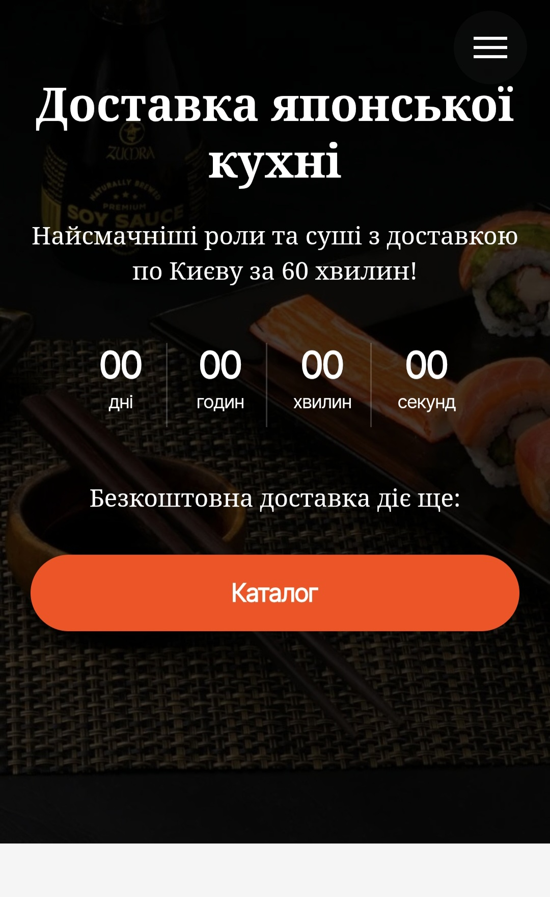

Website for Japanese food delivery across Kyiv, built around a promise of fast delivery.

A dark background with close-up photos of rolls and soy sauce appeals directly to appetite, while a countdown timer for a free-delivery promotion adds a sense of a limited-time offer. One bold orange "Catalog" CTA is the single focal action on the screen, with no distractions.
A single-page showcase site that communicates the offer quickly and leads straight to the product catalog.